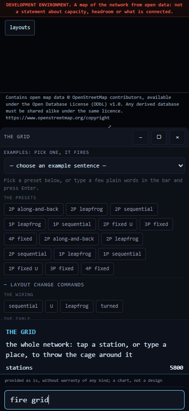
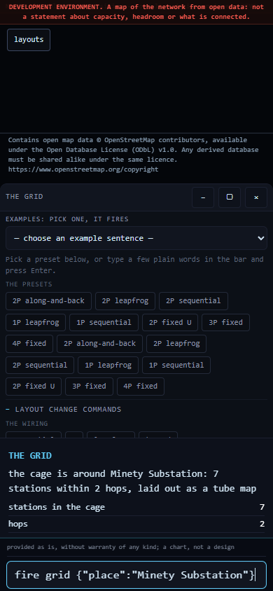
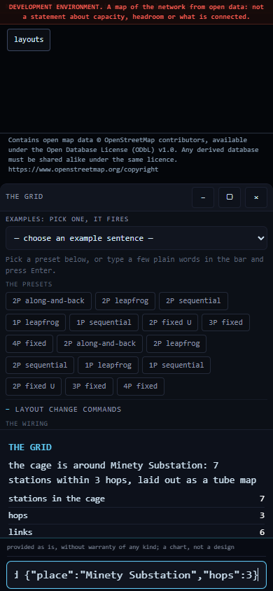
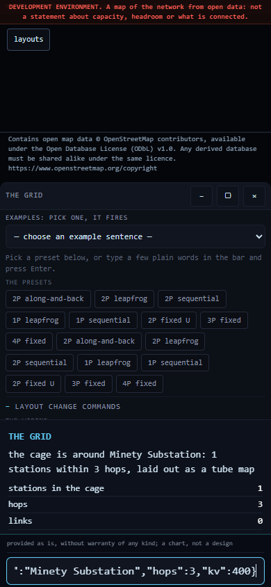
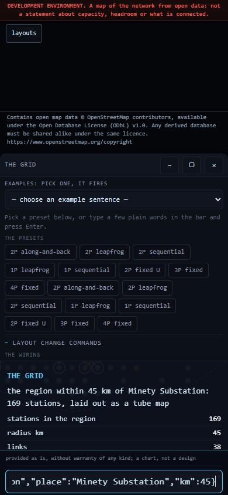
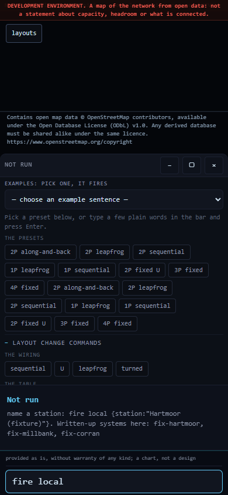
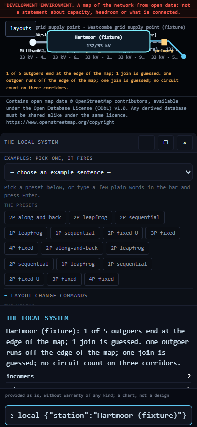
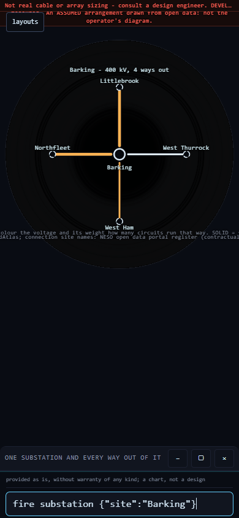
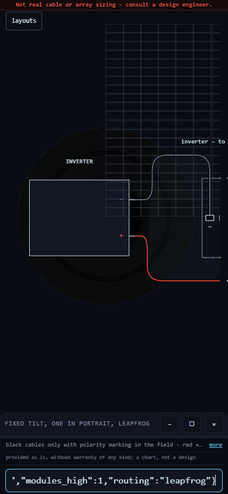
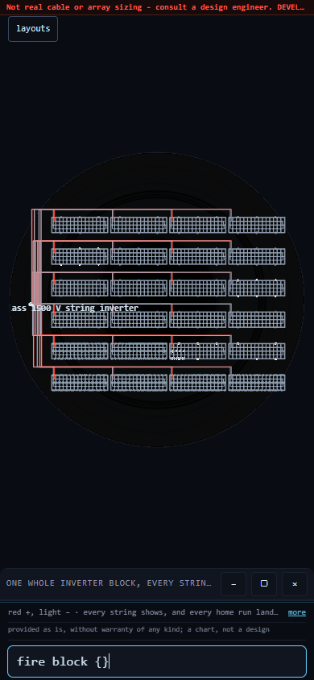

The Kuiper manual: what it is, what to type, and what it will not tell you
Ventus Ltd
If you have never seen this before, read this box and nothing else.
This is a drawing engine that runs in your browser. You type a short command; it draws a picture of part of an electrical system and opens a card with the numbers and with a statement of how it got them. Nothing is installed and nothing you type leaves your device.
Every command has the same shape:
fire <what> {<arguments as JSON>}
fire is always the first word. <what> names the thing to draw — grid, substation, local, string, block, site. The braces hold ordinary JSON: double quotes around names and around text, bare digits for numbers, commas between pairs. {} means “no arguments, use the defaults”, and for some commands the braces can be left off entirely. Copy a line below, paste it into the bar at the foot of the build, and press Enter.
What the answer means. The card is a reading of a drawing, not a result of a study. A solid line was read from data. A dashed line was assumed by the engine, and the card counts its assumptions out loud. Where the engine tests a design against a limit, it names the limit and says whether that limit can be pointed at in a document — see the honest limit below, because two of the four cannot.
It refuses, and that is the feature.
Given something it cannot stand behind, the engine writes a refusal in words and draws nothing. It does not quietly substitute a default and answer anyway. Three things it refuses:
- A value of the wrong kind.
fire site {"modules_in_series":"thirty"}— a count given as words. It says so; nothing is drawn. - A name it does not hold. Ask for a station that is not in the data and it lists the nearest names it does hold, so the question can be asked again. It does not pick the closest match for you.
- A missing argument a default would have to invent.
fire grid {"view":"region"}with no place: a region has to be a radius around somewhere, so it says a place is required rather than silently taking the whole network.
A refusal is the most useful output this engine produces, because the alternative — a plausible number standing in for one nobody supplied — is indistinguishable from an answer.
What this is not.
- It is not a connection offer and not a connection assessment. It says nothing about what any asset can carry, how much of that is already committed, or what is connected to what at any moment.
- It is not a constructability assessment. It does not establish that anything drawn here can be built.
- It is not a consenting design and carries no planning, environmental or land status.
- No output of it is engineering. Engineering carries a named, qualified engineer who takes responsibility for it. Nothing here does. It is a chart that says where to look and where to simulate properly; it does not say what a proper simulation will find.
- No project, site, client, maker or model is named anywhere in this work. Any name you see in an example is either printed in open map data or is a written fixture, and is labelled as such.
The honest limit: two of the four limits have no source
When the engine judges a solar design, it measures it against four limits. Two of them are printed on the source documents. Two of them are not, and were carried in the code as if they were.
| Limit | Value | Where it comes from |
|---|---|---|
| Maximum system voltage | 1500 V DC | Printed on the source documents, on every bin. |
| Maximum series fuse | 35 A | Printed on the source documents, per bin. |
| Per-input current limit | 40 A | No source. Recorded as absent from both source documents. |
| String current limit | 20 A | No source. It appears nowhere in the evidence base at all. |
A verdict that turns on either of the bottom two is provisional and is marked as such. It is a fact about an invented constant, not about any hardware. This is stated here, in the public text, because the alternative — publishing four limits as though they were equally well founded — is the exact failure this manual exists to prevent.
It is not a small corner of the problem. Swept over a fixed box of 1,000,008,375,000 cases, the rule resting on the unsourced 40 A constant claims 605,428,046,670 of them — about three cases in five. The rule resting on the unsourced 20 A constant claims 349,356,466,155, about one in three. The rule resting on the printed 1500 V rating claims 319,769,650,900, just under one in three. The majority of this space is decided by a number nobody can point at in a document.
Read those figures carefully. A rule’s volume is a property of that rule over that box at that step size. Change the box or halve the step and the numbers change; that is geometry, not physics. And the two arithmetic paths that produced them were both built here, so their agreement proves consistency, never truth.
The Kuiper turns energy-system data into interactive engineering drawings. It is built to explore network topology, local systems and solar electrical layouts visually, while distinguishing source data from inferred relationships at every point. It is an exploration and communication environment, not a substitute for detailed engineering design or network studies.
How the Kuiper works
The Kuiper is a drawing engine that runs entirely in the browser on a static page. Nothing is installed, and no data leaves the device.
- The bar. A command bar sits at the foot of the screen, labelled tap here for the commands. Select it, type a command and press Enter.
- The pop-up. If you would rather not type, select the bar and choose from the list that opens. Each entry fills the bar with a complete, working command, so you can see what you have chosen and amend a single value before firing it.
- The pulse. Every command fires a ring that sweeps outward from the centre. The ring is the search: whatever it reaches and retains is left lit, and everything it does not retain stays dark. The pulse conveys the scale of the result before a word of it is read.
- The cage. When the pulse settles, a thin outline is drawn around the retained set. The cage is the boundary of the result: inside it is the selection, outside it is the remainder of the drawing.
- The card. A card opens with the finding, the figures, and a statement of how the result was obtained. The card can be moved, reduced or closed without losing the drawing.
- Solid and dashed. A solid line is drawn from source data. A dashed line is inferred: the drawing is showing a join it has assumed rather than read. The number of assumptions is printed on the card.
Eleven worked simulations follow. Every one of them was run on a phone-sized screen, 390 pixels wide.
Scope and limitations. The drawing is derived from open map data. It does not state what any asset can carry, how much of that is already committed, or what is connected to what at any given moment. Inferred joins are drawn dashed. A route on this map must not be read as a circuit.
1. View the complete drawn network
Open: kuiper-grid/i0089/
Type:
fire grid
On firing. The ring sweeps outward and leaves the whole drawn network lit: approximately 5,800 stations and the links between them, laid out as a schematic diagram in the manner of a transit map rather than to geographic scale. The card reads tap a station, or type a place, to throw the cage around it.
Pulse and cage. The pulse selects everything here, so no cage is drawn. This is the starting view that every other grid command narrows.
Limitations. The drawing does not state what any part of the network can carry. It is derived from open map data and does not describe what is connected. Inferred joins are drawn dashed.

2. Focus on a single station
Open: kuiper-grid/i0089/
Type:
fire grid {"place":"Minety Substation"}
On firing. The ring sweeps outward from that station, leaves it and its immediate neighbours lit, draws a cage around them and opens a card: the cage is around Minety Substation: 7 stations within 2 hops.
Pulse and cage. Two hops is the default. The pulse walks two stops out along the drawn network; the cage is the outline of everything it reached.
If the name is not found, the card lists the nearest names held in the data so the query can be repeated. Any name printed in the data will work; this one is an example.
Scope. Topology only: the drawing does not establish whether those seven stations are electrically connected today. See the scope statement above.

3. Extend the search to three hops
Open: kuiper-grid/i0089/
Type:
fire grid {"place":"Minety Substation","hops":3}
On firing. The same station, but the ring travels one stop further before it stops, and the cage grows to match. The card names the hop count it used, so the view being examined is never in doubt.
Pulse and cage. Hops are counted along the drawn network, not across the ground. One, two and three are the permitted range.
Scope. Three hops is a path through the drawing, not an established route. See the scope statement above.

4. Filter to a single voltage class
Open: kuiper-grid/i0089/
Type:
fire grid {"place":"Minety Substation","hops":3,"kv":400}
On firing. The same sweep, but the ring retains only links drawn at the class named. The cage contracts, in some cases to a single station, and the card counts what remains.
Pulse and cage. This is the most direct way to see how sparse one class is in isolation. If a class is named that the drawing does not hold, the card lists the classes it does hold.
Scope. The class is a label carried in the map data, not an operating voltage.

5. Draw a region by ground distance
Open: kuiper-grid/i0089/
Type:
fire grid {"view":"region","place":"Minety Substation","km":45}
On firing. A radius is taken on the ground around the named place, and every station inside it is laid out as a schematic. The card reads the region within 45 km of Minety Substation: 169 stations.
Pulse and cage. This cage is a distance, not a walk. Hops follow the network; a region disregards it and takes everything within the radius. Comparing a region against a cage of comparable size is the quickest way to see how far the drawn network departs from geography. The radius accepts 5 to 120 km.
A region requires a place. Without one, the card says so rather than defaulting silently to the whole network.
Scope. A region is a distance on the ground. The drawing does not state the function of any of those 169 stations.

6. List the documented local systems
Open: kuiper-grid/i0089/
Type:
fire local
On firing. The card names each local system that has been documented and prompts for one to be named. It is the index for simulation 7.
Pulse and cage. No cage is thrown at this stage: this is a question about the drawing, not a selection within it.
Limitations. Nothing here refers to a real site. The systems listed are example fixtures, written to exercise the drawing. Real data is not yet connected to this view.

7. Open a single local system
Open: kuiper-grid/i0089/
Type:
fire local {"station":"Hartmoor (fixture)"}
On firing. The view drops from the national schematic to one station's own system: its incomers, its outgoers, and the destination of each. The card states what it had to infer, in plain terms: 1 of 5 outgoers end at the edge of the map; 1 join is guessed.
Pulse and cage. The cage here is the boundary of the local system itself. An outgoer that leaves the cage is drawn running off the edge rather than invented.
Limitations. Nothing here refers to a real place. The data behind this view is an example fixture, which is why the word (fixture) appears in the name. Inferred joins are drawn dashed and counted on the card.

8. One substation and each connection out of it
Open: kuiper-grid/i0090/
Type:
fire substation {"site":"Barking"}
On firing. One substation is drawn with every connection out of it. The card reads Barking: 4 ways out, 6 circuits, 400 kV, followed, unprompted, by 4 of 20 values assumed (far end identity).
Pulse and cage. The pulse gathers the connections one at a time; the cage is the substation's own boundary, with each outgoer crossing it. Inferred far ends are drawn dashed.
To return to the previous view, type:
back
Limitations. The drawing does not state what those circuits carry or whether they are in service. It is derived from open map data and does not describe what is connected. One in five of the values on this card is inferred, and the card states as much.

9. Wire a single solar string
Open: kuiper-grid/i0091/
Type:
fire string {"mounting":"fixed","modules_high":1,"routing":"leapfrog"}
Alternatively, select the bar and choose a preset such as 1P leapfrog or 2P sequential. Twelve presets are supplied; each fills the bar with the command it ran, so a single value can be amended and the command fired again.
On firing. A row of modules is drawn with the string cable threaded through it: leapfrog wiring runs out along alternate modules and returns through the ones it skipped. The card opens with the finding, the drawing's own figures, and the standing statement Not real cable or array sizing — consult a design engineer.
Pulse and cage. The pulse runs along the string in the order the cable does, so the route is shown being made rather than described. The cage is the string.
Amending one value: "routing":"one-after-another" draws the same row wired in sequence, and the long return cable from the far end becomes visible. That single cable is the case for leapfrog, shown rather than asserted.
Limitations. Nothing here constitutes a specification for procurement. No figure on this card is taken from a physical test; each is an estimate produced by a model, and every card states this.

10. Draw a complete inverter block
Open: kuiper-grid/i0091/
Type:
fire block {}
On firing. Not a single string but every string on one inverter: twenty-four in total, each drawn with its own pair of home runs landing on its own named inverter input. This is the most detailed drawing in the set and takes the longest to settle.
Pulse and cage. The pulse fills the block string by string. The cage is the block boundary; the inverter inputs sit on it, named, so any one string can be followed from module to terminal.
Limitations. The drawing does not establish whether the block is buildable. No figure here is taken from a physical test. The same standing statement — Not real cable or array sizing — appears on this card.

11. Will this string go over 1500 V on the coldest morning?
Open: kuiper-grid/i0097/ (or the plain page at /plant/, which carries the same three commands ready to copy)
Type:
fire site {"module_class":"T660","modules_in_series":30,"site_min_c":-10}
On firing. The whole plant is drawn — grid, interface, collection busbar, one column per block — and the card states, in volts, where that string sits against the 1500 V equipment rating. This one clears it by 2.5 V. That is the entire margin: two and a half volts on fifteen hundred.
The three arguments.
"module_class"— text, in quotes- Which bin of the module family, written as its class label. The bin decides the open-circuit voltage and therefore the answer.
"modules_in_series"— a whole number- How many modules are wired end to end in one string. Given words instead of digits it refuses.
"site_min_c"— a number, degrees Celsius, negative for below freezing- The coldest cell temperature the design has to survive. Cold raises open-circuit voltage; this is the argument the answer is most sensitive to.
Change one value and it fails. One bin up, same thirty modules, same −10 °C:
fire site {"module_class":"T665","modules_in_series":30,"site_min_c":-10}
— now over the rating by 4.0 V. The bin that is actually delivered decides it, not the bin on the offer. A 6.5 V swing between a pass and a fail is the whole point of the exercise.
And a refusal.
fire site {"modules_in_series":"thirty"}
It says, in words, that it cannot stand behind a count written as text. Nothing is drawn. No default answers in its place.
Limitations. Read the honest limit above before reading any verdict: only the 1500 V rating and the 35 A series fuse are printed on the source documents. A verdict that turns on the 40 A or the 20 A limit rests on a constant with no source and is provisional. Separately: voltage margin does not divide by plant size. One design stamped out N times means every string is identical, and a cold morning reaches the whole site inside the same hour. Scale multiplies the consequence and never the tolerance.
The proof behind the numbers: what survives, and what is destroyed
The verdicts above are not produced once and trusted. The space around them is searched continuously on a graphics card, and almost everything the search touches is destroyed on purpose. Only what survives is written to disk. This section is the accounting, because a page that shows you only its survivors is showing you a selected sample.
What a survivor is. A candidate is kept only if all three of these hold:
- It was computed twice and the two answers agreed. Every candidate is evaluated along two arithmetic routes — a factored form, and the same expression expanded by the distributive law, which rounds twice where the factored form rounds once. If the two routes disagree on the verdict, the candidate is destroyed and nothing at all is written: no log line, no warning, no count sitting in a file beside the word SUCCESS.
- Its verdict rests on a limit that traces to a document. If the only thing that decided it was the unsourced 40 A or the unsourced 20 A constant, it is destroyed. Provenance is part of the arithmetic, not a note added afterwards.
- It sits within one step of changing its answer. A point deep inside a settled region only repeats what is already known. It is the expensive kind of nothing, because it looks like work.
One completed run, thirty seconds.
| Measure | Value |
|---|---|
| Candidates evaluated | 18,194,890,752 |
| Candidates carried forward | 6,036,015,418 |
| Rate | about 606 million per second |
| Generations | 4,338 |
| Times the drive was written | 38 |
| Evaluations per line written to disk | 478,812,914 |
About one candidate in three survives; two in three are destroyed and leave no trace. Thirty-eight lines reached the drive from eighteen billion evaluations, because the drive is written only when the shape of the surviving set actually moves. The card’s own memory runs about a hundred times faster than the drive beneath it, so a search that sent every evaluation through the drive would run at under one per cent of the card’s speed and wear it out carrying numbers nobody reads.
Three things this proof does not prove. Do not read past them.
- Zero destroyed pairs is not evidence. The two arithmetic routes really do differ on a large share of candidates — by at most one unit in the last place of a double-precision number. But no candidate in this space lands close enough to a limit for that last bit to flip the verdict. A parting count of zero is therefore the expected result of the arithmetic, not a demonstration that the arithmetic is sound. Anyone quoting the count without this sentence is quoting it wrongly.
- Agreement is not truth. Both routes were written here. Both can be wrong in the same way, and a second channel that inherits a mistake from the first will confirm it forever. In a separate five-pair test, one pair agreed to the last digit and both halves were wrong the same way, having taken the error from the wording of the task they were given. Verification between two things one has built is closed under one’s own belief: it proves consistency, never truth.
- A generation count is not a coverage fraction. Later generations deliberately resample the boundary that earlier ones found, so the evaluations are concentrated at the edge, not spread across the space. Calling evaluations “cases covered” is exactly the error that put a figure forty-eight times too large into a published file on 21 September 2026.
Functions under development
The following are not available in this release:
- Opening a station's card by tapping it on the map — the map draws and the typed commands cage correctly, but a tap did not complete on a phone-sized screen. Use simulation 2 instead.
neighboursandpulsetyped on i0090 — both are offered in the pop-up list, but no command of either name is registered yet. The card states this plainly rather than drawing something incorrect.- Link-removal wording typed on i0090 — no such command is registered; the bar falls through to a text search and returns nothing. Any future feature of this kind will be named and worded as a property of the drawing, not of the network.
systemsandsystem single line diagramstyped on i0086 — the terms appear in the pop-up list, but nothing is registered behind them yet.
These items, and everything else known to be unfinished at this release, are recorded in the validation register held by Ventus Ltd. Each simulation above states its own limitations on the page and on the card.
Attribution and licence
Contains open map data (c) OpenStreetMap contributors, available under the Open Database License (ODbL) v1.0; any derived database is shared alike. https://www.openstreetmap.org/copyright
Code: Apache-2.0. No warranty is given.